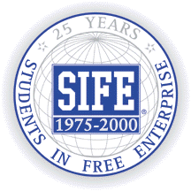

 |
Key Principles |
|
1. To teach the importance of
individual integrity and the social concept
of being closely connected as the elements to
prosperity in today's global
economy.
2. To teach the advantage of continually improving upon one's
interpersonal, technical and monetary skills, which are
vital to success.
3. To teach how supply and demand drive the marketplace, and how
businesses can use that model to fulfill the consumers
needs as well as their own.